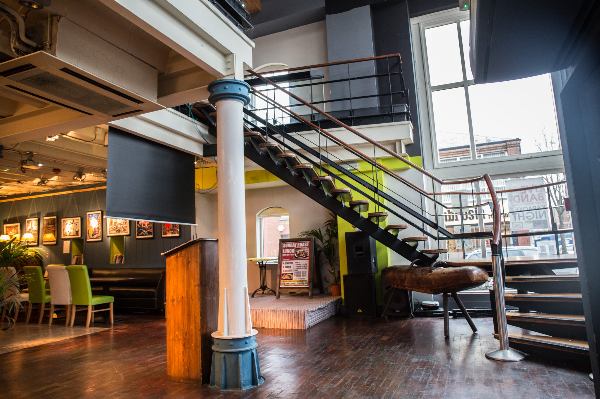

Our vision
In an effort to build the best beer destination we can, we are opening up the development of our bar. This might just be the first bar on Github. Feel free to fork it and make it better.
Our vision for Brewbot Belfast is to build a bar that listens and learns so it can evolve to become a place people have shaped.
 — Patsy's Parlour (legacy version of the bar, March '15)We are interested in the whole process of brewing beer, from the hops picked by the farmer all the way to your glass. This new space will serve as a giant test lab for us to not just learn and innovate on technology but rethink service, dispensing and what it really means to create a destination for people to come and enjoy beer.
We have the freedom to serve up the most crazy concoctions and see if they work or not — and if they don't, tell us. We are adopting an iterative approach to running our bar and we're looking forward to seeing how you shape it.
Join us
Work in a bar dedicated to craft beer and fuelled by Brewbots!
At Brewbot our vision is to create the largest connected network of breweries in the world and now we finally have a place we can call home. Since our Kickstarter campaign we have been on a mission to rethink how beer is brewed and distributed. Now, we are creating a Brewbot Bar for people to indulge in everything that is great about beer culture, somewhere to learn about the brewing process in a hands-on way by actually brewing beer for themselves, and generally geek-out over one of the many world-class craft beers we'll have in stock.
We are looking for enthusiastic, talented, beer-loving individuals to join the Brewbot family on both a full and part-time basis. You will have a special opportunity to help shape the future of our first bar and be a key part of this exciting new adventure. Your role will be to welcome people to the bar, helping both beer connoisseurs and newcomers navigate their way through a world of beer to discover new favourites.
Current openings
Learn more about the roles, requirements and benefits of joining the Brewbot family: